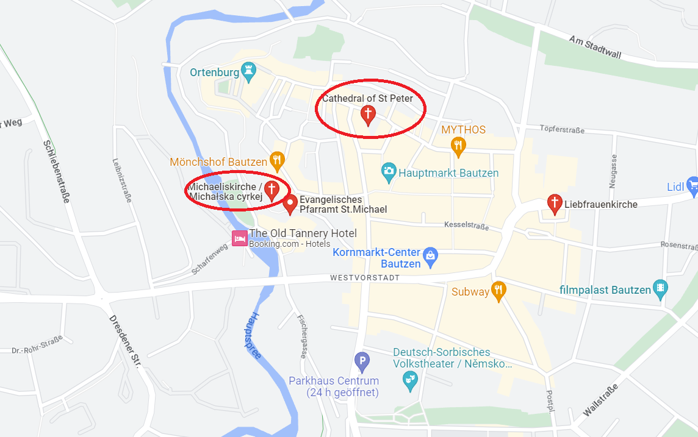
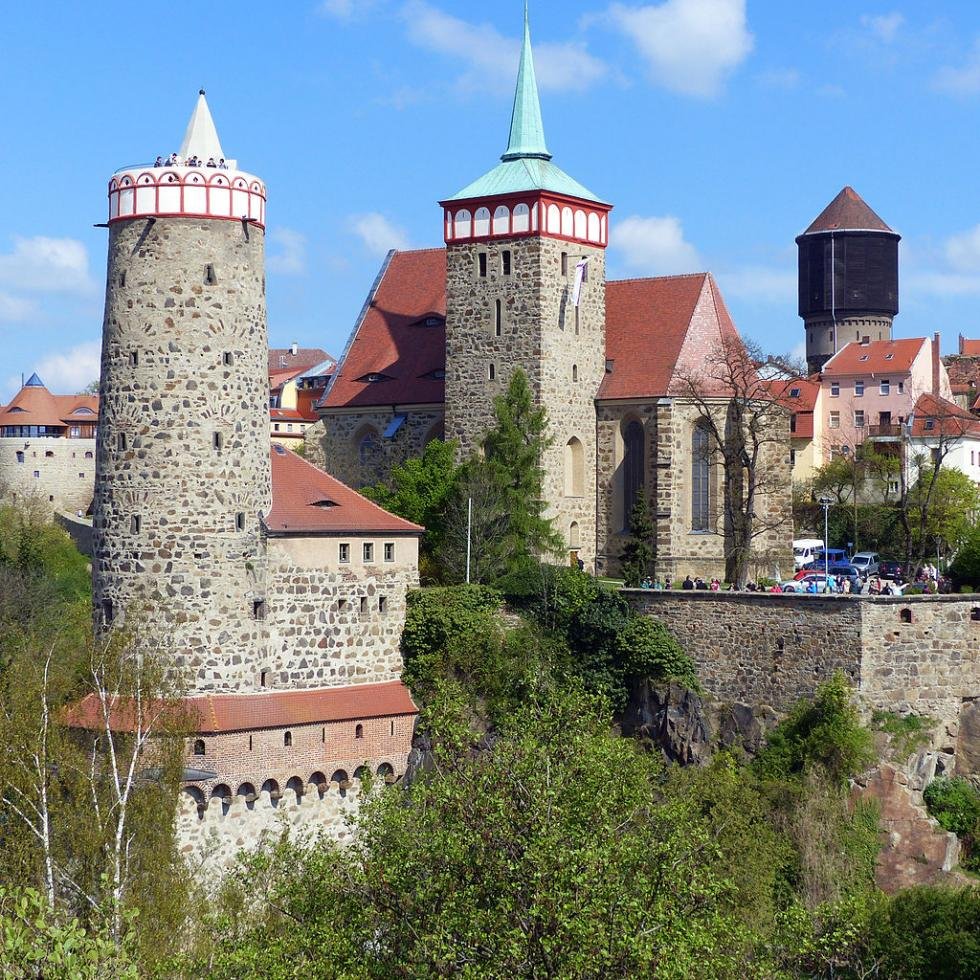
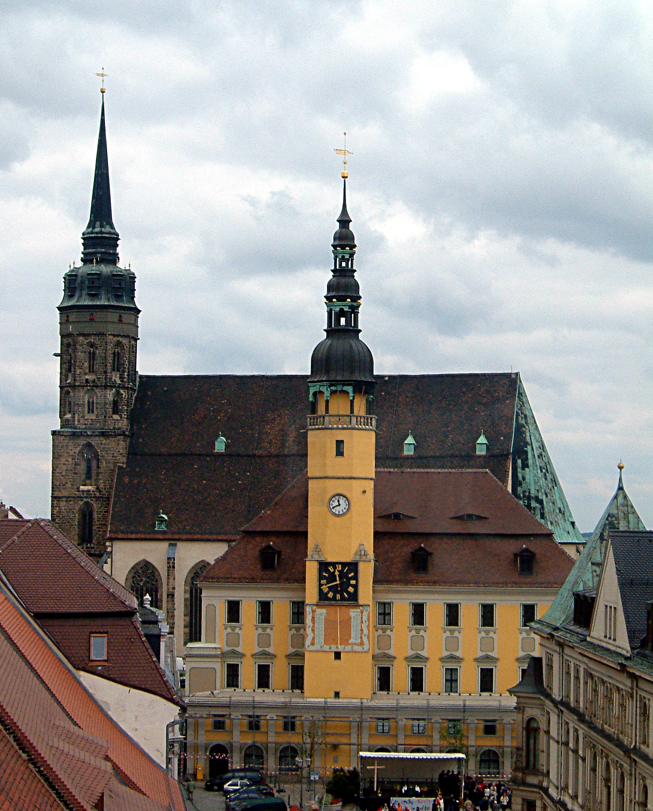
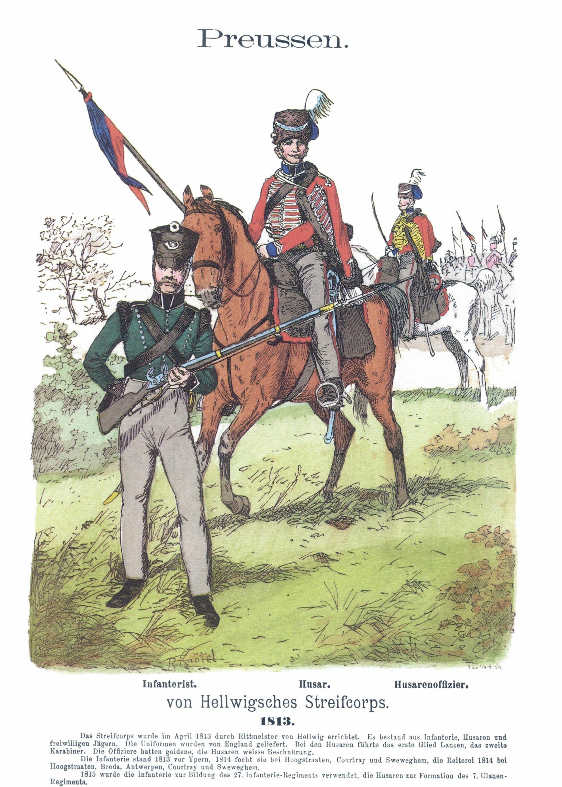
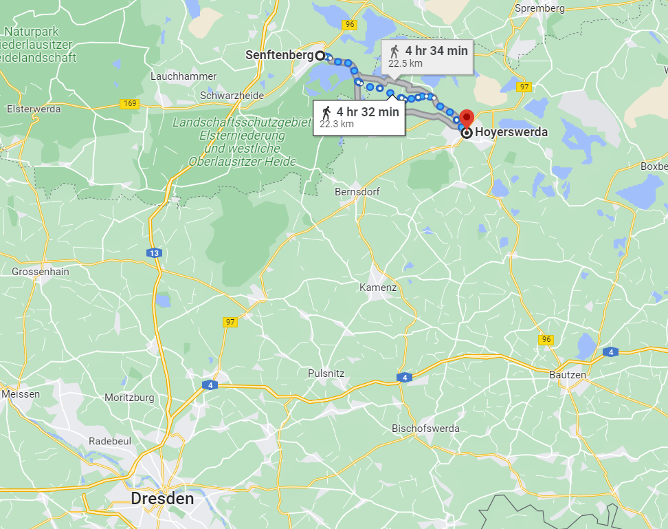
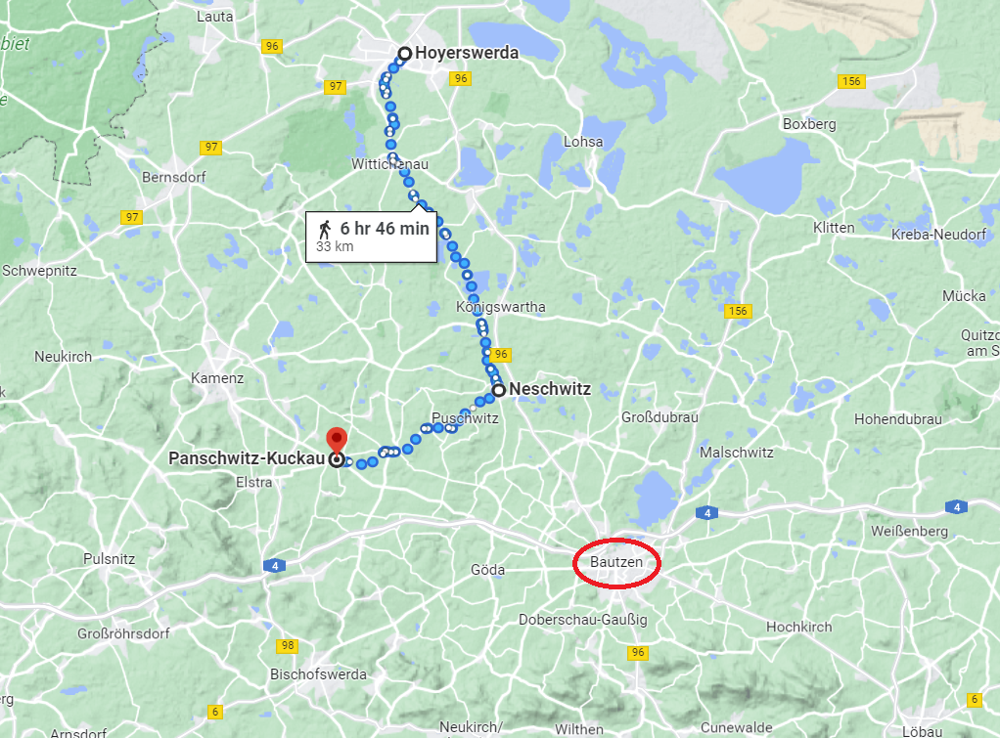

바우첸을 향하여 (13) - 혼란은 전선을 넘어
게시: 2023-03-06T06:30:35+09:00
바우첸 앞에 이미 도착해있던 기존 군단들, 즉 막도날의 제11, 베르트랑의 제4, 마르몽의 제6 군단은 별 다른 하는 일 없이 시간을 보내고 있었습니다. 우디노의 제12 군단이 새로 바우첸에 더 접근하여 코삭 기병들을 쫓아냈을 뿐이었습니다. 그러는 사이 신참 근위대와 제1 예비기병군단은 나폴레옹과 함께 5월 18일 바우첸에 도착했고, 최후까지 드레스덴에 남아있던 고참 근위대와 근위 포병대, 공병대 등도 18일 아침 바우첸을 향해 출발했습니다. 왜 바우첸에서 대치한 양군은 그렇게 조용했을까요? 프랑스군 측에서는 당연한 일이었습니다. 네의 병력이 북쪽에서 나타나길 기다렸으니까요. 그러나 연합군 측에서는 아직 병력 집결이 완료되지 않은 프랑스군을 먼저 공격하는 것이 좋았을 텐데 그냥 내버려 둔 것은 꽤 이상한 일이었습니다. 클라우제비츠도 5월 18일 기록에서 "벌써 8일째 아무 것도 하지 않고 있다"라며 답답한 마음을 드러냈습니다. 그렇게 8일 동안 벌어진 사건들 중에서 가장 흥분되는 사건은 18일 오전 프랑스군 일부가 바우첸 방어선 외곽 밀로라도비치의 부대들과 교전을 벌였을 때였습니다. 연합군에서는 드디어 본격적인 전투가 시작된다며 발칵 뒤집혔고, 짜르와 프로이센 국왕은 서둘러 바우첸 시내 교회탑에 올랐습니다. 눈 앞에 벌어질 한판 승부를 구경하기 위해서였습니다. 그러나 러시아군 기병들이 그 일대로 출동하여 정찰해본 결과, 그건 그냥 프랑스군의 정찰 부대에 불과했고 짜르와 국왕은 허탈하게 탑을 기어내려와야 했습니다.

(바우첸은 중세부터 내려온 도시로서 유서 깊은 건물들이 꽤 있습니다. 이 중 어느 교회탑에 올랐는지를 찾아보는 것도 재미있겠습니다만, 안타깝게도 어느 교회였는지는 찾지 못했습니다. 유력한 후보로는 슈프레 강에 붙어있는 성 미카엘 교회(Michaeliskirche), 그리고 좀 더 시내에 있는 성 페터 성당(Dom St. Petri zu Bautzen) 둘 중 하나가 아닐까 하는데, 성 미카엘 교회는 적진에 너무 가까우므로 아무래도 성 페터 성당이었을 것 같습니다.)

(슈프레 강가에 있는 성 미카엘 교회입니다. 15세기 중에 지어진 것인데, 저 탑은 1495년에 완공되었고 지붕과 천정은 1520년에야 완공되었답니다.)

(성 페터 성당은 지금도 바우첸 구시가지 내에서는 가장 높은 건물입니다. 11세기 즈음에 최초의 성당 건물이 지어졌고 13세기에 수도원이 완공되었으나 1634년 바우첸 대화재 때 이 성당도 큰 피해를 입었습니다. 이후 성당 내부가 바로크 스타일로 새로 개장되었습니다. 물론 그때 이후로도 계속 보수 및 개장이 이루어졌습니다. 사진 속의 모습은 남쪽에서 찍은 것입니다.) 연합군이 이렇게 무기력하게 가만히 있었던 것은 먼저 언급한 대로 짜르의 간섭과 비트겐슈타인의 오락가락 전략, 그리고 바클레이 드 톨리의 도착에 따른 지휘 체계 혼란 등이 다 영향을 끼쳤습니다만, 연합군도 프랑스군 못지 않게 여러가지 혼란스러운 정보들을 접하고 있기 때문이기도 했습니다. 연합군도 간첩들과 프랑스군 포로, 그리고 코삭들이 탈취해온 프랑스군 전통문을 통해 정보를 수집하는 것에 열을 올리고 있었는데, 그 정보들이 다 제각각이었습니다. 보헤미아인 간첩에 따르면 바우첸에 집결할 프랑스군은 7만5천 규모에 120문의 대포를 갖추었는데 네가 베를린으로 몰고 가고 있는 병력은 8만에 150문으로 더 강력하다고 했습니다. 블뤼허 밑에서 유격대(Streifkorps)를 총괄하고 있는 폰 헬빅(Karl Ludwig von Hellwig) 소령은 5월 15일 나폴레옹이 토르가우에 나타났으며 강력한 병력을 이끌고 베를린으로 가고 있다고 자신있게 보고했습니다. 게다가 프랑스군 포로들도 '바우첸 앞에 모인 프랑스군은 그냥 당신들을 묶어 두기 위한 미끼일 뿐이고 나폴레옹은 베를린으로 갈 것이다'라고 증언했습니다.

(Streifkorps는 영어로 번역하면 Patrol Corps, 즉 정찰대 정도에 해당합니다. 주로 자원병으로 구성되었고 적진 후방에서 활동했으므로 우리 말로는 유격대 정도로 번역하는 것이 좋은데, 스페인의 게릴라와는 다른 것이 그림에서 보다시피 군복을 입고 활동했고 정규 장교들에 의해 지휘되었다는 점에서 다릅니다. 저 군복은 영국에서 공급되었다고 그림 아랫부분에 쓰여있네요.) 그러나 프랑스군에 비해 연합군은 코삭 기병대가 잔뜩 있다는 이점을 누리고 있었습니다. 이들은 프랑스군 부대들 간을 쉴 새 없이 오가는 전령들을 요격하여 전통문을 탈취했습니다. 이미 프랑스군의 전통문은 암호화 되기 시작했으나 일부는 평문으로 작성되어 오가고 있었는데, 비트겐슈타인이 18일 입수한 그런 평문 전통문 중 하나는 베르티에가 베르트랑에게 보내는 것이었습니다. 그 속에는 로리스통의 제5 군단이 17일 센프텐베르크(Senftenberg)를 거쳐 18일 호이어스베르다(Hoyerswerda)에 도착할 거라는 내용이 들어 있었습니다. 이것만큼 확실한 정보는 없었습니다.

(베르티에는 이번 작전에서 자세히 써야할 편지를 지나치게 간단하게 쓰더니 여기서는 대충만 써도 될 편지를 지나치게 자세하게 쓰는 바람에 적군에게 로리스통의 이동 방향은 물론 이동 속도까지도 시시콜콜 알려주는 결과를 낳았습니다.) 그럼에도 불구하고 연합군은 네의 주요 군단들이 베를린으로 가는 것인지 바우첸으로 내려오는 것인지 확신할 수가 없었습니다. 어떻게 보면 이런 혼란은 필연적이었습니다. 보헤미아 간첩이나 프랑스군 포로들이 일관성 있게 '나폴레옹이 베를린을 노린다'라고 진술한 것은 실제로 나폴레옹이 빅토르의 군단으로 계속 베를린을 노리고 있었기 때문이었습니다. 다만 그 의도가 늙고 피로한 베르티에를 거쳐 네에게 전달되는 과정에서 대혼란이 일어났는데, 간첩과 포로를 통해 그 혼란이 연합군에게까지 번진 것이었습니다. 계속 잡혀오는 프랑스군 포로들은 여전히 베를린 진군설을 이야기했고, 어떤 장교 포로는 북쪽의 프랑스 군단들은 독일-폴란드 국경인 오데르 강의 퀴스트린 슈테틴 등의 요새들을 향하고 있다고 말했습니다. 그리고 실제로 그게 나폴레옹의 깊은 의중이긴 했습니다.
그런 혼란 때문에 프로이센 국왕 빌헬름 프리드리히는 여전히 나폴레옹이 빅토르와 합류하여 베를린으로 가고 있다고 믿었고, 그 때문에 주프로이센 영국 대사인 스튜어트는 캐슬레이에게 보내는 편지에서 '자신은 아마도 곧 프로이센 국왕과 함께 베를린 방면으로 이동하게 될 것 같다'라고 보고할 정도였습니다. 게다가 운 좋게 손에 넣은 베르티에의 통신문은 하도 조각조각의 정보만을 포함하고 있어 프랑스군에게도 혼란을 일으켰을 정도였으니, 연합군도 그걸 읽고 혼란스러워 했던 것은 자연스러운 것이었습니다. 연합군이 알 수 있었던 것은 베를린으로 가고 있다고 생각했던 5개 군단 중 로리스통의 군단은 바우첸으로 오고 있다는 것이었습니다. 게다가 로리스통의 군단이 내려오고 있는 중이라고 해도 이 군단이 연합군의 우익을 덮치려는 것인지 아니면 눈 앞의 나폴레옹 본대와 합류하려는 것인지도 불분명했습니다.
유능한 지휘관은 절대 적이 주도권을 가지게 내버려 두어서는 안 됩니다. 당장 눈 앞의 막도날-베르트랑-마르몽의 군단들은 이미 자리를 잡고 있어 기습 공격하기 여의치 않았다고 해도, 북쪽에서 내려오고 있는 로리스통의 프랑스군을 앉아서 기다릴 것이 아니라 역으로 쳐들어가서 프랑스군이 결집하기 전에 각개격파하는 것이 상식이었습니다. 특히 기병 자원이 풍부한 연합군이 정보 및 기동성에서 더 유리했으므로 더욱 그러했습니다. 뒤에 보시겠습니다만 이에 대해서는 비트겐슈타인도 생각하는 바가 있었습니다. 그러는 사이 5월 19일 아침이 밝았고, 네는 로리스통의 제5 군단에게 동이 트는 대로 호이어스베르다를 떠나 네슈비츠(Neschwitz)로 향하되 판슈비츠(Panschwitz)를 통해 나폴레옹의 본대와의 연계를 시도하라고 지시했습니다. 뜻하는 바는 네는 19일 아침까지만 해도 연합군은 슈프레 강 서쪽까지 바우첸 일대가 모두 연합군 수중에 있으며 나폴레옹의 본대는 실제보다 훨씬 서쪽에 위치하고 있다고 생각했다는 뜻입니다. 어떻게 보면 당연한 일이었습니다. 베르티에는 계속 보고만 받으려 들었을 뿐 나폴레옹 본대나 연합군의 위치에 대해서는 그냥 '연합군이 바우첸에 집결했다'라는 것 외에는 별 정보를 주지 않았고 네에게 구체적으로 어느 마을 어느 위치로 진격하라고 정확한 지시도 주지 않았던 것입니다. 네의 지시대로 움직였다가는 로리스통은 나폴레옹의 의도처럼 연합군의 우익을 포위하는 것이 아니라 그냥 나폴레옹의 우익과 만나게 되어 있었습니다.

(네가 로리스통에게 지시한 호이어스베르다로부터 네슈비츠까지의 경로, 그리고 네슈비츠에서 판슈비츠까지의 경로입니다. 대략 호이어스베르다-네슈비츠의 거리는 20km 정도이므로 저녁이 되기 전에 로리스통은 네슈비츠에 충분히 닿을 수 있었습니다.) 베르티에가 야기한 이 대환장 파티는 남쪽에서 온 귀인이 로리스통 앞에 나타나면서 극적으로 끝납니다. Source : The Life of Napoleon Bonaparte, by William Milligan Sloane Napoleon and the Struggle for Germany, by Leggiere, Michael V
https://religiana.com/michaeliskirche-bautzen https://de.wikipedia.org/wiki/Dom_St._Petri_(Bautzen) https://commons.wikimedia.org/wiki/File:Kn%C3%B6tel_I,_28.jpg
{kind=link}